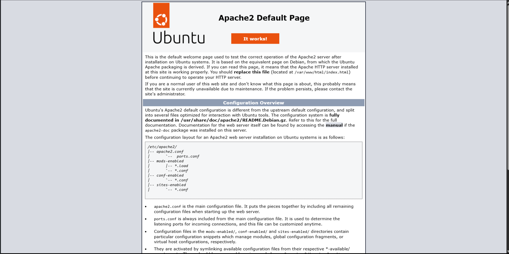
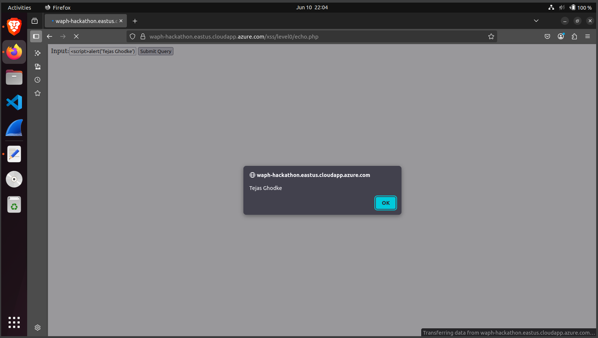

Web Application Programming & Hacking
Taught by Dr. Phu Phung
Course Overview
In the Web Application Programming and Hacking course, I gained hands-on experience in full-stack web development and cybersecurity principles. Through two foundational labs, I developed core web skills such as HTML, CSS, JavaScript, PHP scripting, and server-side programming. These labs focused on real-world application logic and emphasized understanding web security and backend functionality. During Hackathon 1, I applied cross-site scripting (XSS) attack and defense concepts in a collaborative, time-boxed environment—simulating real-world security scenarios. This experience sharpened both my offensive and defensive security skills, enabling me to critically evaluate and strengthen web application security. The individual project challenged me to create a professional portfolio site hosted on GitHub Pages. I integrated interactive elements using AJAX, designed a responsive layout with Bootstrap, and created dynamic features like visit tracking and last-updated timestamps using JavaScript. Each page showcases structured content, real-time interaction, and secure coding best practices, culminating in a fully deployed personal portfolio website that demonstrates both technical and design expertise.
- HTML5, CSS3, and Bootstrap for responsive, mobile-friendly design
- JavaScript for DOM manipulation, dynamic content, and client-side logic
- AJAX for asynchronous requests and interactive user experiences
- PHP for server-side scripting and secure backend logic
- API integration for dynamic data fetching and interaction
- Cross-Site Scripting (XSS) attack and defense techniques
- GitHub Pages for static site deployment and version control
- Git for tracking changes and collaborative development
- Form validation and secure user input handling
- Modular JavaScript via external scripts (e.g., visit tracking, dynamic dates)
This course blends modern front-end and back-end practices with an emphasis on secure coding and real-world application scenarios, preparing me for professional web development roles.
Last edited:
Labs
The labs in this course are hands-on exercises designed to reinforce core concepts in web development and security. These are not public and have been submitted privately to the instructor.
This foundational lab introduced the tools and environment required for web application development and security testing. I set up a Linux-based virtual development environment, installed critical software packages, and configured Git for version control. Additionally, I tested the Apache web server and used SSH to securely push code to GitHub.
- Installed Ubuntu 22.04 as a virtual machine with 4 cores, 8 GB RAM, and 50 GB storage using VirtualBox
- Installed essential packages:
Apache2,Git,Curl,OpenSSH Server, andPandoc - Verified Apache setup by accessing the default webpage from host and VM IP addresses 
- Cloned the course repository and created a private GitHub repo for lab submissions
- Generated and registered an SSH key for secure Git operations
ssh-keygen -t rsa -b 4096 -C "ghodketg@mail.uc.edu"Pandoc to generate a formatted PDF report from README.mdpandoc README.md -o ghodketg-waph-lab0.pdfIn this lab, I explored how the web functions at both the protocol and programming levels. Through a combination of network analysis and basic back-end scripting, I gained hands-on experience with the HTTP protocol, request/response mechanisms, and simple web server-side development using C and PHP.
- Used Wireshark to capture and analyze HTTP GET and response messages
- Sent manual HTTP requests to a server using Telnet and compared the structure with browser-based requests
telnet example.com 80
GET / HTTP/1.1
Host: example.com#include <stdio.h>
int main(void) {
printf("Content-Type: text/plain; charset=utf-8\n\n");
printf("Hello World CGI! From Tejas Ghodke, WAPH\n");
return 0;
}<?php
echo "You entered: " . $_REQUEST["data"];
?>curl and browser testingcurl -X POST http://localhost/echo.php -d "data=Tejas"In Lab 2, I created and deployed a full HTML page showcasing form handling, JavaScript interactivity, AJAX, jQuery, and public API integrations. I explored different types of styling methods (inline, internal, and external), implemented a digital and analog clock, and added dynamic behavior to enhance user interaction.
- Created a form in raw HTML to submit user input to a PHP echo handler via GET
- Added JavaScript for click-based date display, real-time clocks, and input key logging
// Real-time digital clock
setInterval(() => {
const now = new Date();
document.getElementById("digit-clock").innerHTML = now.toLocaleTimeString();
}, 1000);
XMLHttpRequest to send and display input asynchronouslyfunction getEcho() {
const input = document.getElementById("ajax-input").value;
const xhttp = new XMLHttpRequest();
xhttp.onreadystatechange = function () {
if (this.readyState === 4 && this.status === 200) {
document.getElementById("ajax-response").innerHTML = this.responseText;
}
};
xhttp.open("GET", "echo.php?data=" + encodeURIComponent(input), true);
xhttp.send();
}
// jQuery POST request
$.post("echo.php", { data: input }, function(data) {
$("#jquery-response").html("Server says:
You entered: " + data);
});Lab 3 introduced secure web application development using PHP and MySQL. I built a login system that accepts a username and password, verifies credentials against a MySQL database, and displays feedback to the user. This lab demonstrated both insecure and secure coding practices, highlighting the importance of defensive programming and input sanitization.
-
Part A & B: Set up a MySQL database called
waph_lab3and created aUserstable with test data using phpMyAdmin and command-line tools. -
Part C: Wrote an intentionally vulnerable PHP script using raw SQL queries:
This exposed the site to SQL Injection attacks. I confirmed the vulnerability by logging in using a payload like:$sql = "SELECT * FROM Users WHERE username='$username' AND password='$password'";' OR '1'='1 -
Demonstrated XSS by submitting a JavaScript payload like:
which was echoed back without sanitization.<script>alert('XSS')</script> -
Part D: Rewrote the vulnerable code using prepared statements to prevent SQL injection:
$stmt = $conn->prepare("SELECT * FROM Users WHERE username=? AND password=?");
This ensured that malicious inputs were treated as data, not code.$stmt->bind_param("ss", $username, $password); - Implemented PHP session management to retain login state and show a welcome message only if the user is authenticated.
Hackathons
Hackathons in this course are short, time-boxed challenges designed to test students’ ability to identify and exploit vulnerabilities in real-world scenarios—and then apply secure coding principles to defend against those same attacks. They simulate adversarial environments while emphasizing best practices for modern web security.
In Hackathon 1, I explored reflected Cross-site Scripting (XSS) vulnerabilities across multiple web application levels. The challenge was split into two main tasks: identifying and successfully exploiting client-side injection points (Task 1), and redesigning vulnerable code to defend against those same threats (Task 2). I worked through six progressively harder attack levels, followed by hands-on defensive implementations in both PHP and JavaScript.
Task 1: XSS Attacks
-
Level 0–2: Discovered basic XSS flaws where input was echoed without sanitization (via GET and POST methods). Crafted simple
<script>injection payloads like:
<script>alert('Tejas Ghodke')</script> -
Level 3: Bypassed
<script>filtering using:<iframe src="javascript:alert('Tejas Ghodke')"> -
Level 4: Circumvented blacklist filters (blocking "script"/"javascript") by leveraging non-keyword tags and event handlers:
<body onload="alert('Tejas Ghodke')"> -
Level 5: Bypassed "alert" keyword filtering using character encoding:
<body onload="alert('Tejas Ghodke')"> -
Level 6: Achieved attribute-based XSS by injecting
onmouseoverdirectly into an HTML element:" onmouseover="alert('Tejas Ghodke')
Task 2: XSS Defenses
-
PHP Fix: Rewrote vulnerable
echo.phpto usehtmlspecialchars():<?php echo "You entered: " . htmlspecialchars($_REQUEST["data"], ENT_QUOTES, 'UTF-8'); ?> -
JavaScript Fix: Replaced unsafe
innerHTMLwithtextContent:// Before ajaxDiv.innerHTML = "Server says: " + this.responseText; // After ajaxDiv.textContent = "Server says: " + this.responseText;
htmlspecialchars() in PHP and textContent in JavaScript to prevent DOM-based injection. It reinforced how real-world web apps can be secured through layered validation and output encoding.
I also recorded a full walkthrough video as extra credit. You can watch it here.
Individual Projects
This section highlights an individual project where I applied full-stack development, asynchronous JavaScript, and secure coding principles to create a portfolio-ready, interactive web application.
Live Clocks
Below are two real-time clocks:
Email Toggle
Theme Toggle
Auto-refreshing Joke
Disclaimer: This content is generated by JokeAPI. I am not responsible for third-party material.
XKCD Comic
Disclaimer: The comic shown below is pulled live from the XKCD API. I am not responsible for the content.
This project demonstrates my proficiency in front-end development as part of Dr. Phu Phung's WAPH course. I created and deployed a professional resume website on GitHub Pages featuring my background, skills, and projects. The site integrates dynamic JavaScript functionalities and public APIs, styled using Bootstrap and a custom CSS theme to deliver a polished, employer-ready profile.
General & Non-Technical Features
- Live website deployed at ghodketg.github.io with a responsive resume layout
- WAPH course and project page linked via
waph.htmlshowcasing Labs, Hackathons, and this project - Built using Bootstrap 5 with custom theme enhancements and visuals
- Google Analytics integration to track visitor activity and interactions

JavaScript Features
- Digital Clock: Real-time updating clock using
setInterval - Analog Clock: Live clock drawn using the HTML5
<canvas> - Email Toggle: Button to show/hide email using DOM manipulation
- Theme Toggle: Switches between base and alternate dark themes
- First-Time Visitor Cookie: Greets users and tracks visit time using cookies

API Integrations
- JokeAPI: Fetches a random joke every 60 seconds using
fetch() - XKCD Comic API: Displays the latest XKCD comic with title and alt-text
- Disclaimer: All API-generated content is from third-party sources; the site owner is not responsible for the data shown

fetch(), cookie-based state management, and user experience design. Deploying on GitHub Pages and integrating public APIs taught me how to deliver responsive, interactive, and real-world web applications.
You can view the source code here: GitHub Repository